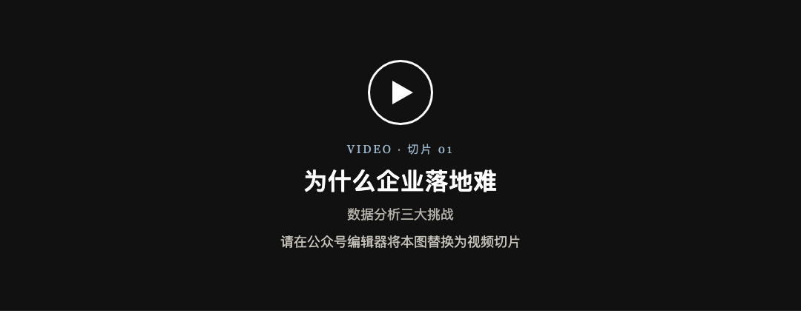
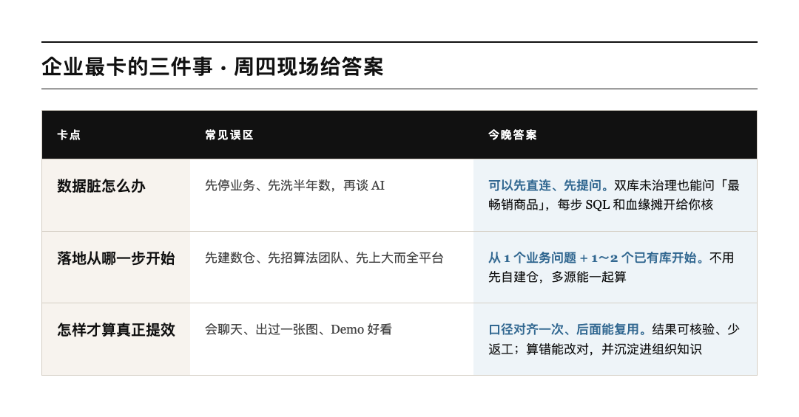
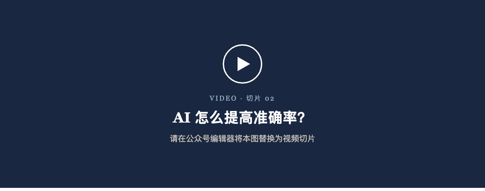

企业上 AI ，很多人一上来就问模型够不够强。
真到落地，卡的通常是更土的三件事：数太脏、不知道从哪开始、也不知道怎样才算提效。
下周四晚上，我们请 InfiniSynapse 联创祝威廉 来视频号，对着这三件事现场跑一遍。不念 PPT ，就打开库，问问题，把过程摊给你看。
⚡ 先记一句
数据再脏，也能先问起来；落地不用先建仓；提效看的是口径对齐、结果敢信，不是 Demo 好看。
图 1 ： 8 月 20 日周四 19:00 ，微信视频号见
祝威廉， InfiniSynapse 联创，做了 20 年数据工程。
周四就两段真演示，都是他前阵子跟客户现场跑过的同款：
翻译成人话：不用先自建仓，多个库能一起算，数字你自己能核。
不想读长文也行。先看这段切片——数据分析那三道坎，为什么一到企业就卡住。
觉得说中了，周四再来看他怎么对着这三件事现场跑。


到时候你就盯这三句就够了：
模型会说，不代表数字准。准不准，往往卡在口径、血缘、能不能核验。
下面这段就聊这件事： AI 怎么把准确率提上去，而不是只会给出一张好看的图。

周四中间会穿插问答。生产库能不能直连、会不会把库打挂、权限做到哪、 ROI 怎么算，都可以问。问题优先从群里抽，所以先进群更划算。
时间： 8 月 20 日周四 19:00–20:00
地方：微信视频号
人：祝威廉｜ InfiniSynapse 联创
进群可以领 InfiniSynapse 月度会员，价值 150 元。这个群不会播完就散，后面还要继续聊落地、收问题、发资料。
💡 两步就结束
先扫右边进群占座，再扫左边预约直播。到点微信会提醒你。会员直播后 24 小时内在群里发。
图 5 ：左预约，右进群。会员价值 150 元
进了群、又预约了，直播时优先被问到。你手头的坑也可以直接丢进来：数脏、口径对不齐、不敢碰生产库，都欢迎。
切片先看，完整版周四来。一个小时，把「到底能不能落地」从口头变成你能自己核对的现场。
8 月 20 日周四 19:00 ，视频号见。